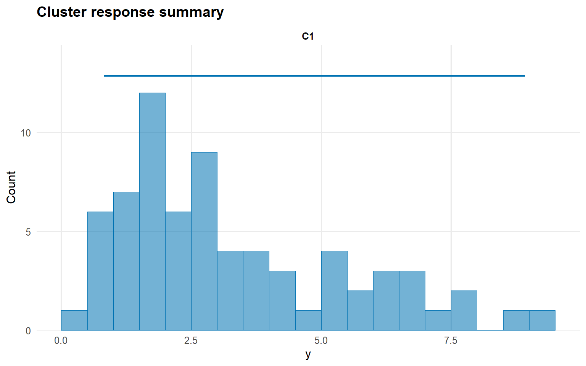
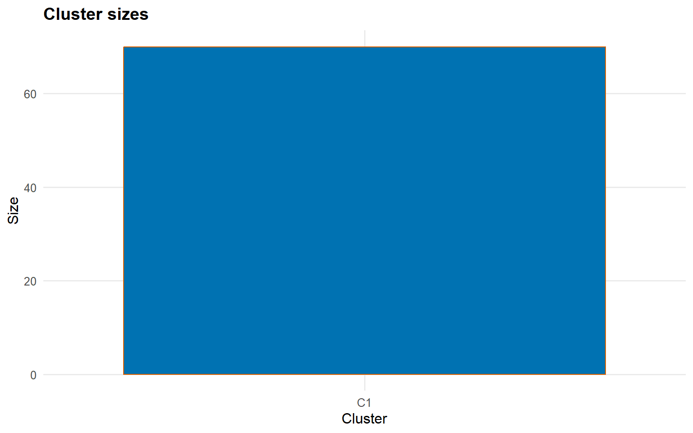
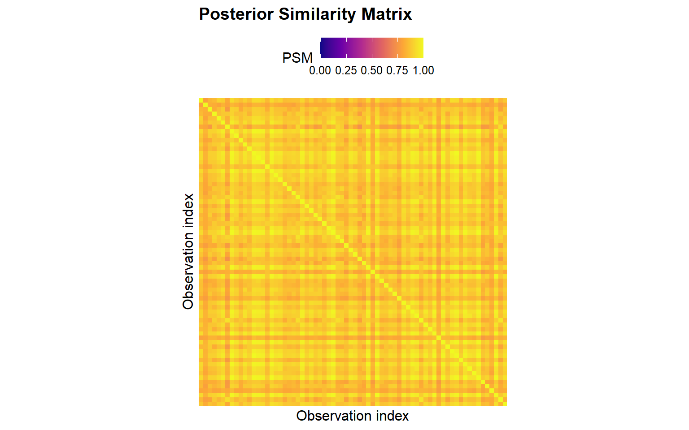
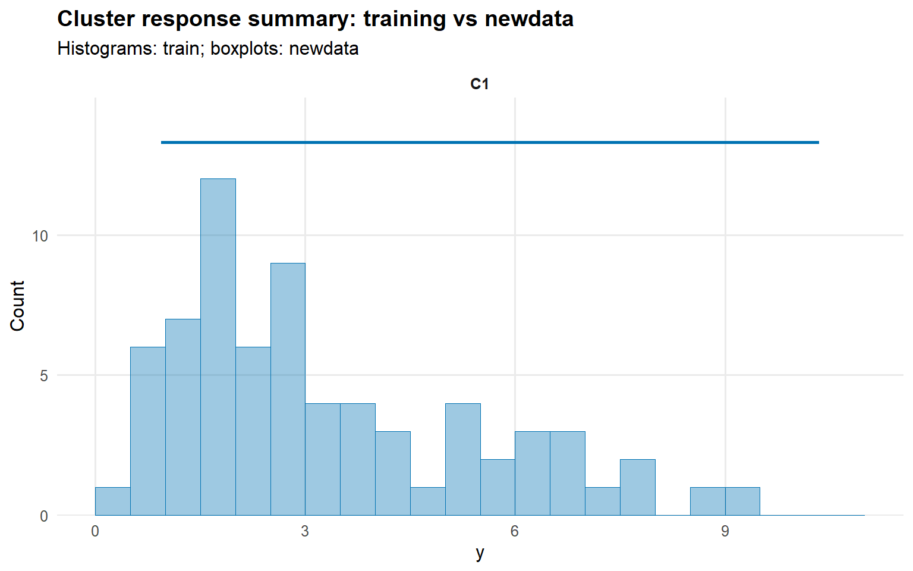
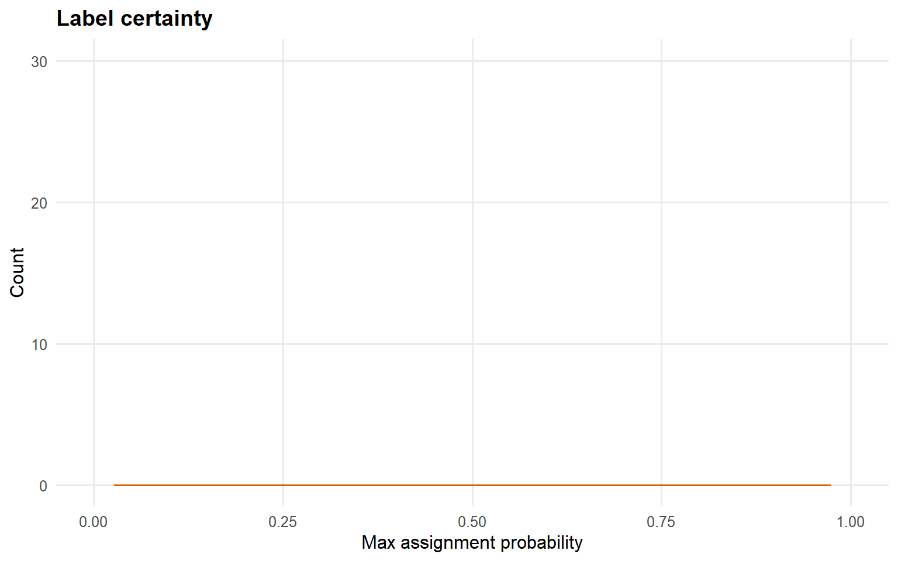

ex16. Clustering with Regular Kernel (Parameter Links + Covariates)
Website workflow note. This page reflects the current exported clustering API built around dpmix.cluster(), predict(), summary(), and plot(). Last updated: 2026-03-19.
For the package-level theory and longer narrative, see the manuscript and the clustering discussion in the main package articles.
Clustering with a Regular Kernel and Covariate-Dependent Parameter Links
Purpose: Fit a bulk-only clustering model in which covariates affect component-specific kernel parameters (type = "param"), while mixture weights remain global.
Data Setup
data("nc_posX100_p3_k2")dat <-data.frame(y = nc_posX100_p3_k2$y, nc_posX100_p3_k2$X)train_id <-seq_len(70)train_dat <- dat[train_id, , drop =FALSE]test_dat <- dat[-train_id, , drop =FALSE]summary_tbl <-tibble(split =c("train", "test"),n =c(nrow(train_dat), nrow(test_dat)),y_mean =c(mean(train_dat$y), mean(test_dat$y)),y_sd =c(stats::sd(train_dat$y), stats::sd(test_dat$y)),x1_mean =c(mean(train_dat$x1), mean(test_dat$x1)))summary_tbl %>%mutate(across(c(y_mean, y_sd, x1_mean), ~signif(.x, 4))) %>%kable(caption ="Train/test split for the bulk-only clustering workflow", align ="c") %>%kable_styling(bootstrap_options =c("striped", "hover"), full_width =FALSE, position ="center")
Train/test split for the bulk-only clustering workflow
split
n
y_mean
y_sd
x1_mean
train
70
3.313
2.191
-0.08687
test
30
3.782
2.861
0.24020
ggplot(train_dat, aes(x = x1, y = y, color = x2)) +geom_point(alpha =0.65) +labs(title ="Training sample for bulk-only clustering",subtitle ="Covariates drive kernel parameters via type = 'param'",x ="x1",y ="y",color ="x2" ) +theme_minimal()
Here the formula still defines the full covariate structure, but type = "param" means the model uses those predictors to shift component-specific kernel parameters rather than the cluster weights. This matches the parameter-link clustering formulation described in the manuscript.
Training Labels and Cluster Summaries
cluster_psm_param <-predict(fit_cluster_param, type ="psm")cluster_train_param <-predict(fit_cluster_param, type ="label", return_scores =TRUE)fit_summary_param <-summary( fit_cluster_param,vars =c("y", "x1", "x2"),top_n =5)train_sizes_tbl <-tibble(cluster =paste0("C", names(fit_summary_param$cluster_sizes)),n =as.integer(fit_summary_param$cluster_sizes))train_sizes_tbl %>%kable(caption ="Representative training cluster sizes", align ="c") %>%kable_styling(bootstrap_options =c("striped", "hover"), full_width =FALSE, position ="center")
Representative training cluster sizes
cluster
n
C1
70
plot(fit_cluster_param, which ="summary", top_n =5)

plot(cluster_train_param, type ="sizes", top_n =5)

plot(cluster_psm_param)

The fit-level and label-level plotting methods expose the same representative partition from different angles: size summaries, response summaries, and the full posterior similarity matrix.
plot(cluster_new_param, type ="summary", top_n =5)

plot(cluster_new_param, type ="certainty")

For newdata, the labels are returned in the space of the representative training clusters, which makes train/test comparison straightforward without exposing component-label switching from the sampler.
Takeaways
dpmix.cluster() is the current wrapper for bulk-only clustering.
type = "param" is appropriate when covariates should alter within-cluster regression/parameter structure while keeping global mixture weights.
The same three-step workflow applies as in the spliced example: fit, predict(..., type = "psm" | "label"), then summary() and plot().
This closes the examples sequence with the two main clustering modes now exposed by the package website.